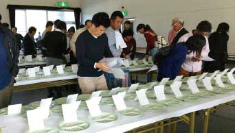
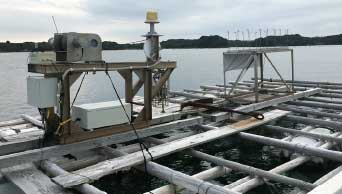
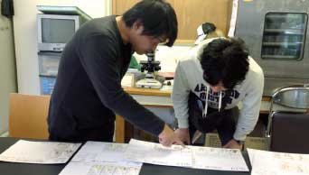

品評会関連

全国真珠養殖漁業協同組合連合会と共同で、全国真珠品評会、全国花珠真珠品評会を開催するとともに、愛媛県浜揚真珠品評会、三重県真珠品評会の支援。
養殖技術工場関連

変動の激しい自然環境の中で生産するあこや真珠の品質向上を図るために、三重県真珠養殖連絡協議会が実施する自動観測ブイ管理事業や愛媛県漁業協同組合連合会等が実施する宇和海水温観測システム事業を支援。
また、日本産アコヤ真珠の品質保持を図るために全国真珠養殖漁業協同組合連合会が行う高品質珠生産活動事業を支援する。
新技術・新基準関連

優良母貝生産に役立てるため愛媛県漁業協同組合連合会等が実施する２年貝による挿核試験を支援する。
また、真珠の生産が国際的に広がる中で発生する各種の問題に対処するため真珠研究委員会を開催し、必要に応じて国際会議などに専門家を派遣。